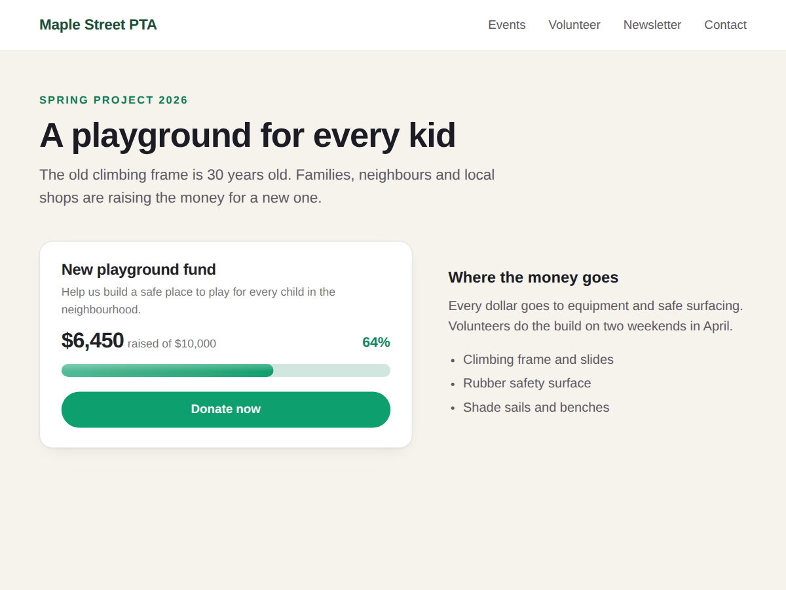

Raisemeter
Fundraising thermometer and donation goal bar
- Goal thermometer or progress bar on any page
- Counts donations from any source, even cash
- Donate button linked to your donation page
- Milestones, countdown, donor count, confetti

What it does
Raisemeter adds a fundraising goal meter to any page of your site. Visitors see the amount raised, the goal and the percent, shown as a progress bar or a classic thermometer.
The meter shows the total you type in Settings, so it can count money from any source: an online payment link, a crowdfunding page, a bake sale, cheques or pledges made at an event. When new money comes in, you change the total and publish.
The default design is meant to fit light and dark sites, and the meter fills up when visitors scroll to it. You can add a Donate button that links to your donation page. Colours, font and currency can be changed, and you can count items such as meals or books instead of money.
It suits school and parent association projects, church and club drives, animal rescues, team trips, charity runs and other campaigns with a number to reach.
The free plan includes the progress bar and the thermometer, 20 currencies, your colours, font and Donate button, with no branding. Premium adds a circle style, milestones that show what each amount pays for, a countdown to your end date, the number of donors, and confetti when the goal is reached.
Price
Free
- Progress bar or thermometer
- Goal, amount raised, 20 currencies
- Your colours, font and donate button
- No branding on your site
Premium
$4/month, $36/year ($3/month billed yearly)
- Circle style meter
- Milestones on the meter
- Countdown to your end date
- Donor count and confetti at goal